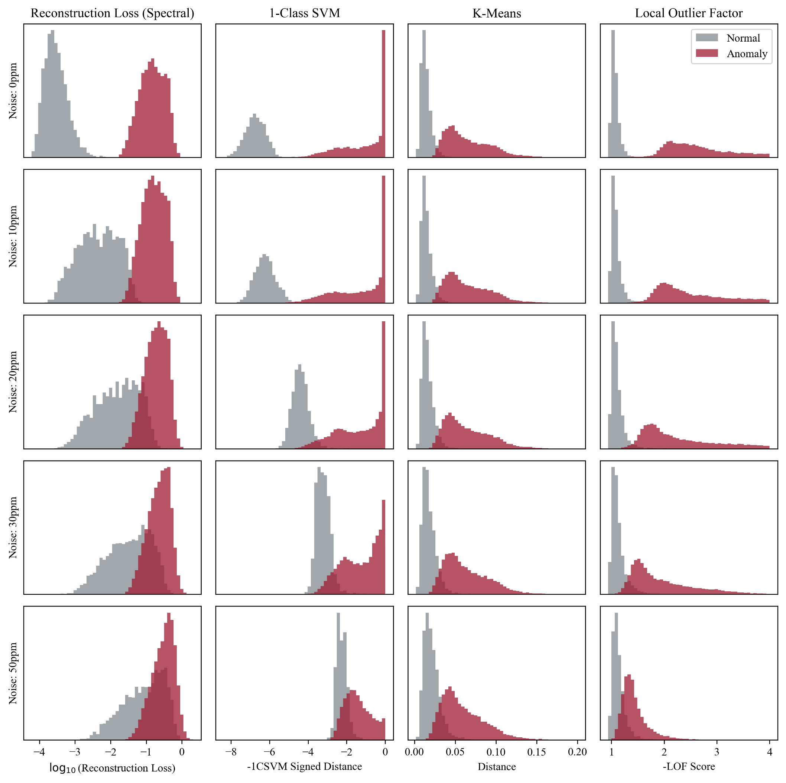

Overview of the talk
Introduction
- Machine learning in exoplanet science
- Transmission spectroscopy
Method
- Overview of the database
- Autoencoder and anomaly detection
Results
- What is the best performance
- Effect of noise
Conclusion
- What are the next steps?
Exoplanet atmospheres
- Finding out the diversity of
possible planets within the Universe - Understand how planets
form and evolve - Search for life?

The challenge of big data in exoplanet science
Roman et al. submitted

Detection by transit
Credits: https://science.nasa.gov/
Database
- Use of TauREx plus different levels of
Gaussian noise - final database of 69,099 spectra

Normal vs Anomalous spectra

Normal vs Anomalous spectra

Autoencoder architecture
- Encoder compresses the input
- Decoder reconstructs the input
- from 52 dimensions to 8 dimensions
Reconstruction loss

- If a spectrum is familiar, the autoencoder will reconstruct it well
- If it’s unfamiliar or strange, the reconstruction will be poor
Anomaly detection

- 1-Class SVM
Anomaly detection
- 1-Class SVM
- K-means
Anomaly detection

- 1-Class SVM
- K-means
- Local Outlier Factor (LOF)
Results - Histograms

Histograms in spectral space
Results - Histograms

Histograms in latent space
Results - ROC curves
- True positive rate vs false positive rate
- Diagonal = no better than random guessing
Results - ROC curves
- True positive rate vs false positive rate
- Diagonal = no better than random guessing


Comparison of methods


Conclusions
- Anomaly detection using autoencoders is most effective in the latent space
- K-means clustering gives the best performance
- The method is robust to noise, up to a realistic level expected for space-based observations around 30 ppm